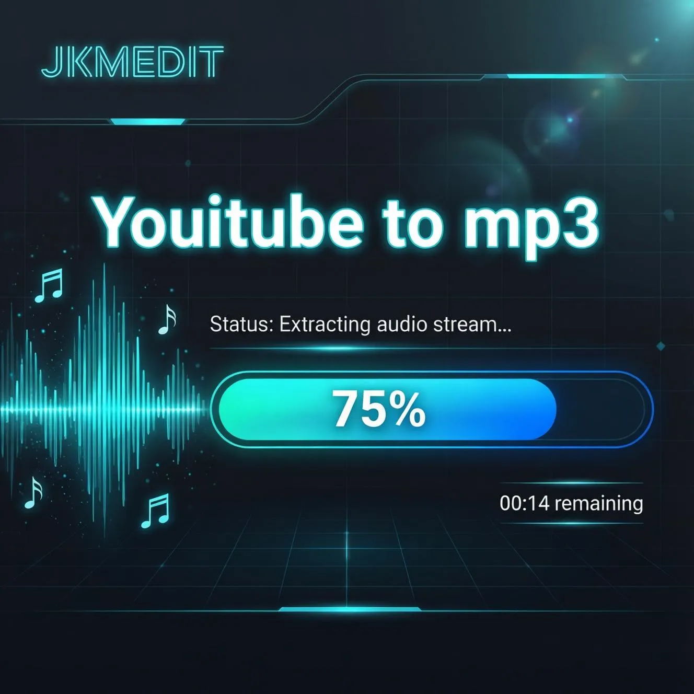
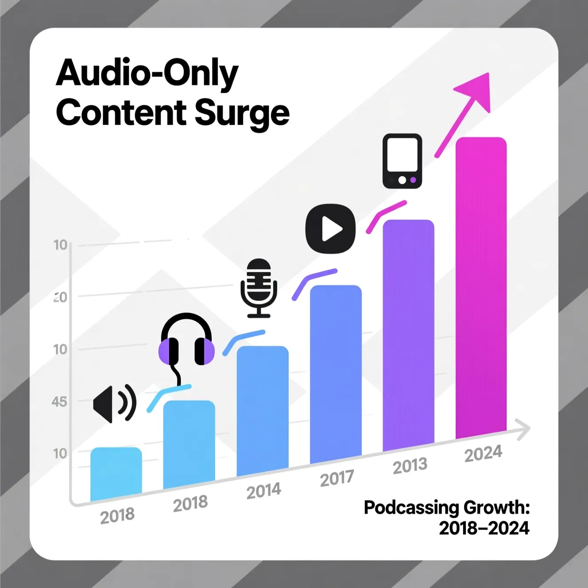
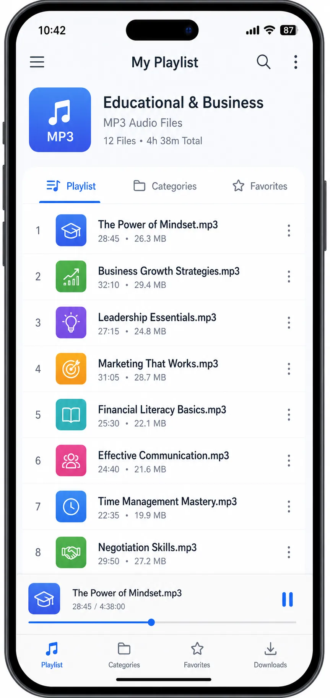

YouTube to MP3 — Convert Video Audio Into Flexible Listening Format
Fast, Clean, and Professional Audio Conversion for Modern Digital Content Consumption.
Written by JKM Edit Team
Published on May 18, 2026
10 min read

Intro
In the past decade, the way people consume media has undergone a massive transformation. Today, millions of people depend on an online video platform for learning, entertainment, company, music, interviews, podcasts, knowledge, business, tutorials, and informational content. Video is an engaging type outlet to consume content from. However, today's big consumers want the audio only version with no visual distraction of the video playing. The reasons? Convenience, portability, flexibility and the ability to consume audio content while doing other things.
Audio consumers can learn and enjoy listening to content while working on a project, commuting, doing a workout, traveling to work, studying for an examination, doing a phone conversation or any type of other job. This has driven the popularity of MP3 conversion tools, which can easily convert video into an audio format.
A YouTube to MP3 converter is an application that helps a user download the audio from the video and save as an mp3 for easy listening. If you want education lectures, motivational speeches, recorded interviews, podcasts , language learning lessons, informational discussions, and so forth, all of them can be readily converted as audio.
However, there are millions of online conversion tools which offer terrible user experience because of excessive ads, misleading buttons, excessive pop-ups, redirects , bad UI , refresh, Ultimate slow performance , sloppy workflow, and so forth. All of these features unfavorably impact the overall experience and user trust.
JKM Edit YouTube to MP3 project, on the contrary focuses on the clean, professional and user-friendly conversion experience to ensure the integrity of the user experience. By focusing on the clean and simple accessibility , efficient workflow , modernusability , and light weight performance , we assist in providing a simple and smooth audio converting experience. We are not interested only in content converting , but in the overall multimedia experience for the modern digital user.
What is YouTube to MP3 Converter ?
YouTube to MP3 converter is an online tool that assists to isolate the audio from a video and convert to mp3 . Users can listen audio part in isolation, instead of obstructive playback the whole video.
MP3 as one of the most popular audio formats around, we have the following advantages:
High compatibility
Small file size
Wide support
Compressed
Portable
Smooth playback
What people are using MP3 conversion for
Lectures
Podcasts
Interviews
Motivation
Music Listening
Business Talk
Language Learning
Audiobook Style
Productiviy
Informative
Audio only digital gathering of media becomes non-negotiable and essential in day to day fast paced mobile lifestyle of todays people, who are essentially thrilled to do everything at the same time.

Why digital audio consumption is increasing so much
Digital audio consumption increasing because today's people values flexibility and efficiency, and is obsessed to watch videos. There is no doubt, compared to how they watch video collection, audio consumption provides them:
Hands-Free Audio Enjoyment
Backing Audio Listening
No Battery consumption
No Usage of Internet
Learning on the move
Easy Multitasking
Higher Productivity
Therefor they can listen business podcasts while commuting, education lectures while working out , motivation while turning on their computer to work or while traveling, interviewing while traveling or online tutorials while studying offline.
Thus MP3 conversion is essential to today's digital users.
How JKM Edit You Tube to Mp3 Is Coming Most Useful
1.Simple conversion process
There's no useless complexity in this product
2.Sharp and professional UI
Not crowded as converting sites widely exist
3.Quick browsing
Users browsing can access platform more quickly using current browser.
4.simple user experience
Make the distraction minimize the complexity.
5.Modern artistic form
Reduce the complexity, enhance usability and work efficiency with professional interface form.
6.browser
User no longer needs the complicated desktop for simple converting work process.
7.Audio consumption
Machs audio content consumption more convenient.
8.Work process focused on efficiency
The converting process on word machine is more focused on efficiency, convenience and speed than searching archive.
The advantages of converting video into audio
Offline - Offline listening without continuous sending internet video.
Less Information - Audios is often consuming less information than video.
Multitask - It's possible to serve other works.
Portability study - Education information can be followed at the traveling.
Better capability - It can be difficult to marry working and learning and listening on audio information form.
Converting a professional to listening work form from headphones to portable flying during exercise, on the go, commuting and office performance.
List of uses from converting YouTube videos to MP3
Education and Learning
Learners and students are often converting video lectures, seminars, and tutorials for revision.
Podcast conversion
Converting longer conversations and interviews to an audio file makes them more manageable.
Language Learning
Listening to audio is a great tool for developing users' recognition of pronunciation and listening to understand.
Profession and Productivity
Workers listening to industry conversation and analysis, market analysis, and corporate leadership at work.
Motivational and Personal Growth
Personal development content can be accessed on a more flexible and personally relevant basis.
Research and Information
Employees and researchers listening to conversations and research while multitasking, review.
Why MP3 Becomes the Industry Standard
Even though the types of multimedia consumes keep changing with time, MP3 will remain become the de facto industry standard for the distribution of audio content as it allows users play almost every devices, gives stable audio playback, file sizes are smaller, space efficient, easily accessible to devices and more through lots of software about. These are a few common devices for which MP3 file format is already available to play are smart phones, study tablets, laptops, media player and smart devices without any software installation.
Why Do You Use JKM Edit YouTube to MP3?
Professional User Experience: Providing usability over unnecessary advertisements and moving objects in the background.
Easy Access Fast Workflow: More efficient way to access file conversion with less complicated methods.
Clean Interface Professional and clean look for better understanding.
Lightweight Smooth performance and simple workflow are more important feature than accounted for.
Modern Access standards maximum till latest browsers.
Easy Being more confusing and complicated.
JKM Edit vs Other YouTube to MP3 Platforms
Feature
JKM Edit
Generic Conversion Websites
Heavy Desktop Software
Browser Accessibility
Yes
Yes
No
Clean Interface
Yes
Often cluttered
Medium
Lightweight Workflow
Yes
Medium
Low
Easy Navigation
Yes
Medium
Medium
Fast Accessibility
Yes
Medium
Low
User Experience Focus
High
Low
Medium
Modern Design
Yes
Limited
Medium
Minimal Distractions
Yes
Often excessive
Medium
Simplified Workflow
Yes
Medium
Low
About JKM Edit
A user that has encountered uncompelling conversion sites and annoying pop-ups.
The issues with most conversion methods we commonly find
"We hear it: "Fake download button"
"Pop up nuisance"
"Redirect spam"
"Messy interface"
"Mobile úgh!"
"Slow speed"
"Security issues"
"Bad navigation"
"Interface is crap"
These issues do not make for a trustable experience, and a poor user experience. JKM Edit is designed to be more sleek and professional.
Focus on user experience in todays's multimedia tools!
Users now want to get fast results, with minimum distraction, with a clean interface, with reliable processing, mobile magic and a professional look. Users dont care about the tools, but are they experience. JKM Edit reduces confusion, and makes the workflow more accessible.
Audios as the next generation learning experience
Audio media naturally belong to many person's lives. Users just like you dad commute to work listening to the news, the sister run cardio routine while listening to educational content, the boss listened to content for deep work, the coworker walks listening to lecture, the way you learn. Audio is a productive tool for busy people.
Audio Conversion educational content is to the Benefit
Educational Content in Audio Conversion to the Benefit
Easier Access: Optimized Learning Method for Studying
Easier Replication: Ability to Replay Audio
Easier Placement: Try Desk-less Learning
Easier Moving: Big Concept in Smaller Packages
Smart Management: Try Learning in Idle Time
Portal Trends
How to Learn to Consume Digital Content is Rapidly Evolving. The striking trends are the podcast era, Audio-First learning, Mobile Work Professionals, listening to content easily and in background, smart speakers, usage of voice to control the application experience, listening to the content in background. The audio conversion features align with the evolving changing preferences of my users.
browser based accessibility has many Advantages
A browser based tool has many advantages over the traditional desktop application. Web accessibility frees the user from installing a big application at first place. It's instantly available, it's device agnostic, it takes up less disk space, on-boarding is simple, workflow is seamless and technical barrier is dowsed. JKM Edit is all about the browser accessible audio conversion.

How to Manage Your Audio Library more Efficiently
Users can manage the converted files efficiently by:
Creating folders: Create separate folders for your business podcasts, educational podcasts and music.
Name the files: name the files with appropriate meaningful names before uploading on your mobile.
Youtube to MP3 converter Add appropriate tags (alb, grr, al, ars) to update mp3 metadata for better search.
Clear the space more frequently:- Delete old, temporary copies frequently to keep the drive clean.
Frequently Asked Questions (FAQ)
An online utility that extracts audio from video content and converts it into MP3 format, allowing users to listen to the audio separately without full video playback.
Audio content allows for hands-free listening, easier multitasking, reduced data usage, and portable learning, making it highly valuable in modern digital environments.
MP3 dominates due to universal compatibility, small file sizes, reliable playback performance, and broad software support across almost all devices.
Browser-based tools require no large installations, offer faster accessibility across different devices, and have lower technical barriers for everyday users.
No, JKM Edit is designed to provide a clean, professional interface free from the frustrating pop-ups, fake download buttons, and excessive ads found on generic platforms.
Ready to create your library now?
Start pulling great sound from your favourite educational videos and entertainment right away